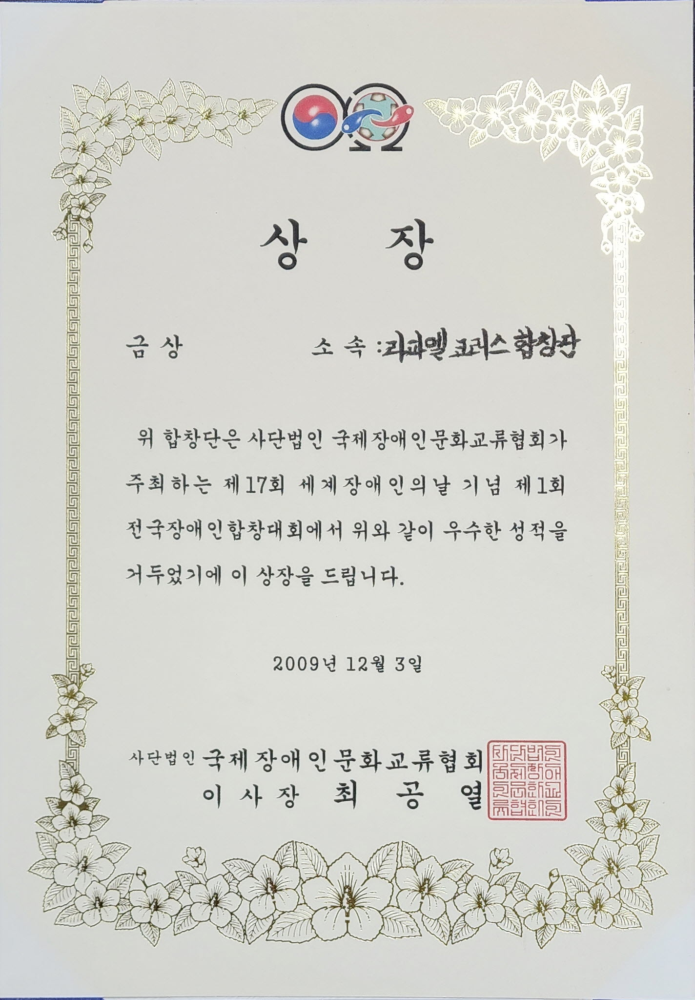
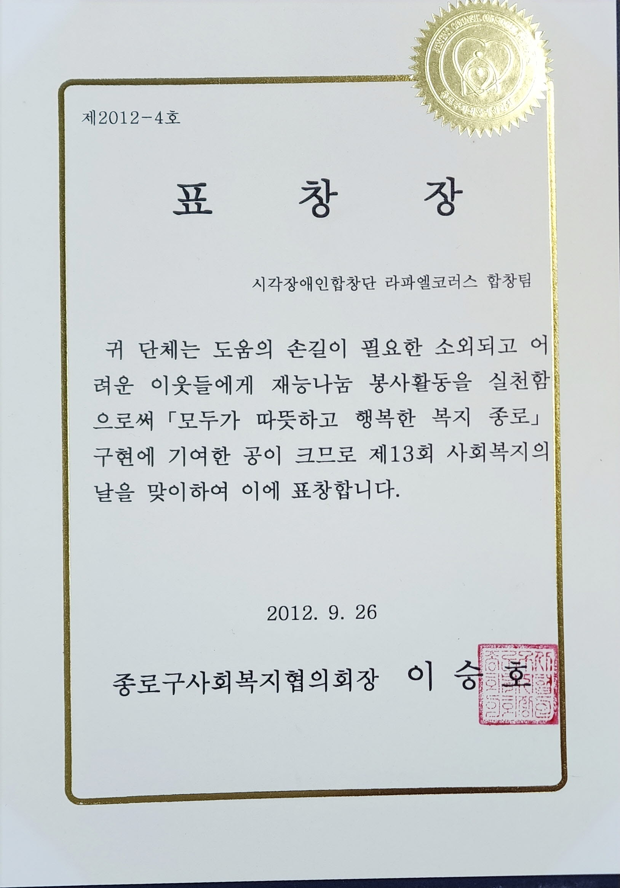
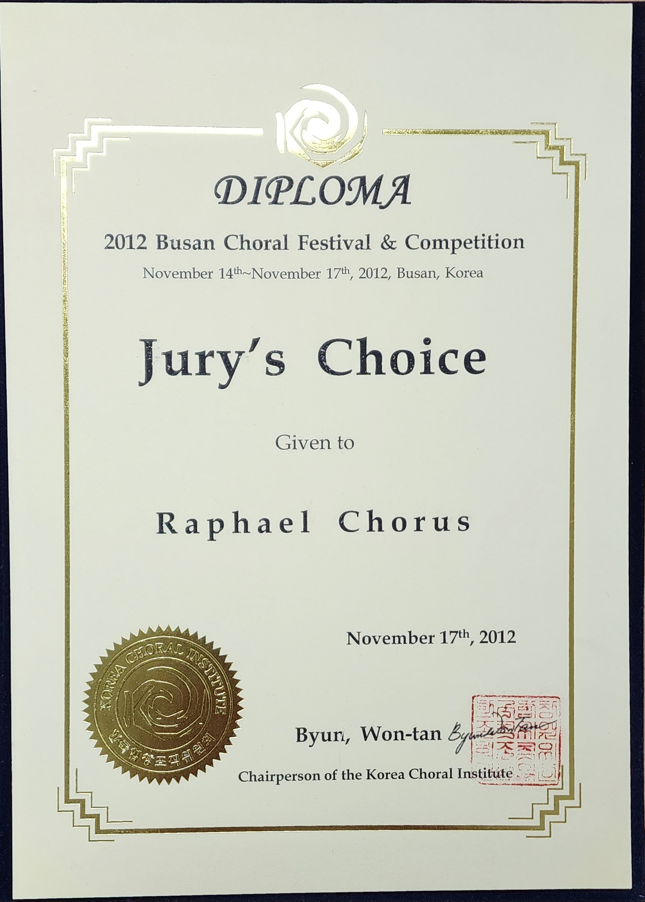
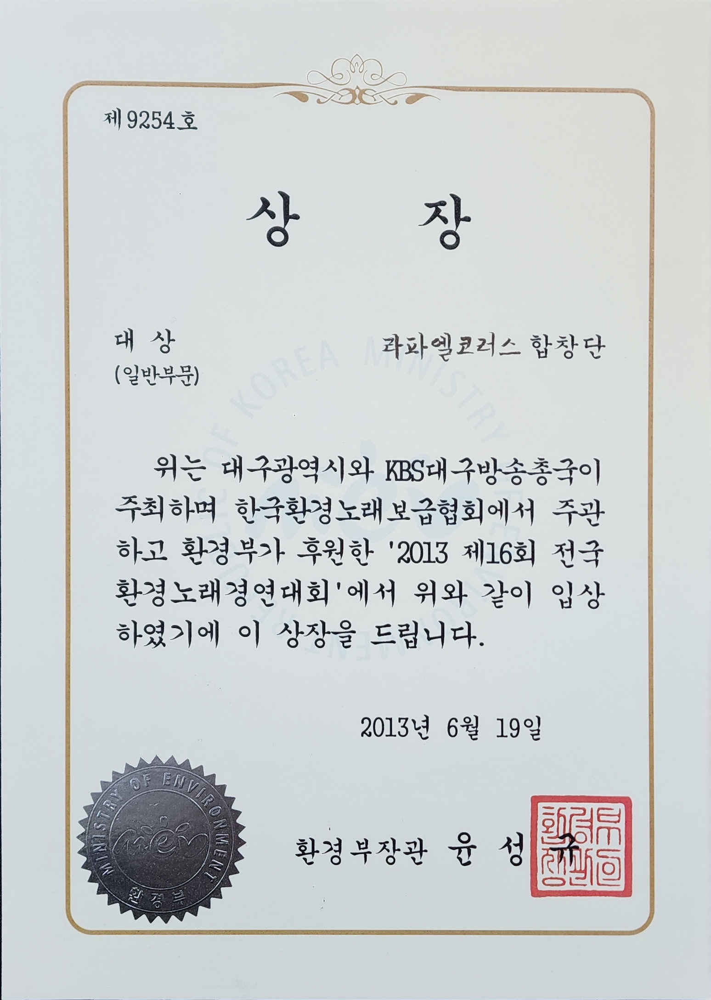
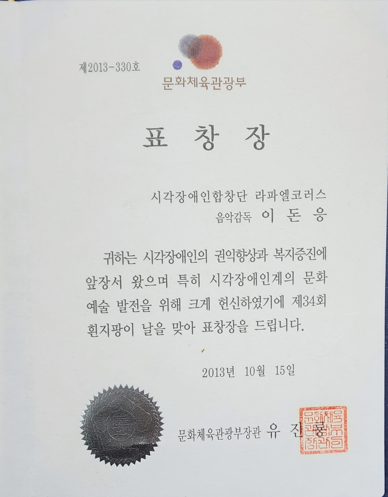
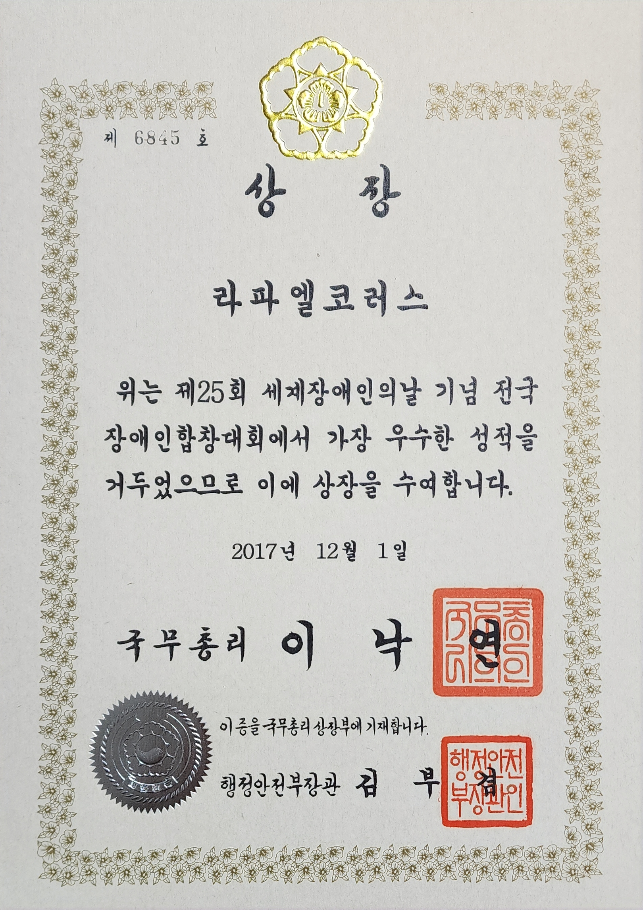
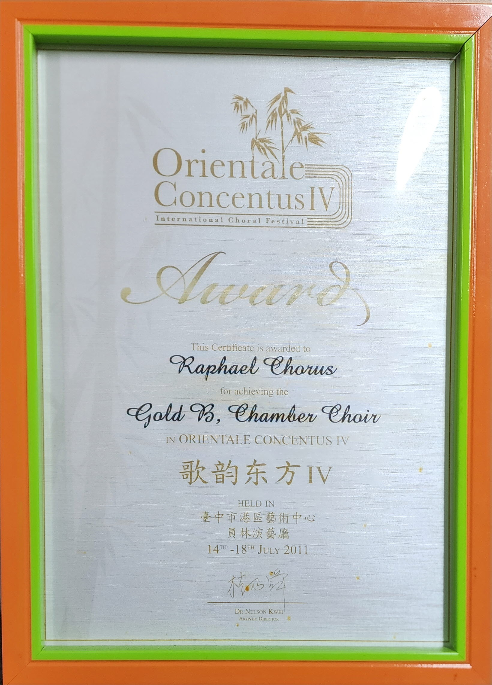
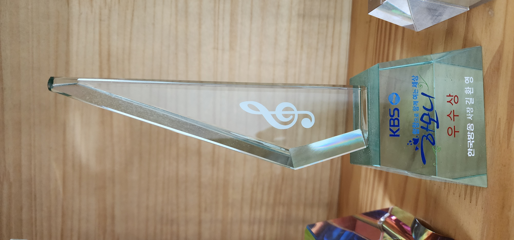

전국 장애인 합창대회 대상
국제장애인문화교류협회라파엘코러스의 땀과 꿈으로 남긴 소중한 발자취입니다.

전국 장애인 합창대회 대상
국제장애인문화교류협회
사회복지 유공자 표창
종로구사회복지협의
부산국제합창대회 심사위원상
부산국제합창축제
제16회 전국환경노래경연대회 대상
KBS대구/대구시
표창장
문화체육관광부
전국장애인합창대회 최고상
국무총리
Orientale Concentus IV 우승
대만 국제합창제
2014 KBS 더 하모니 우수상
KBS